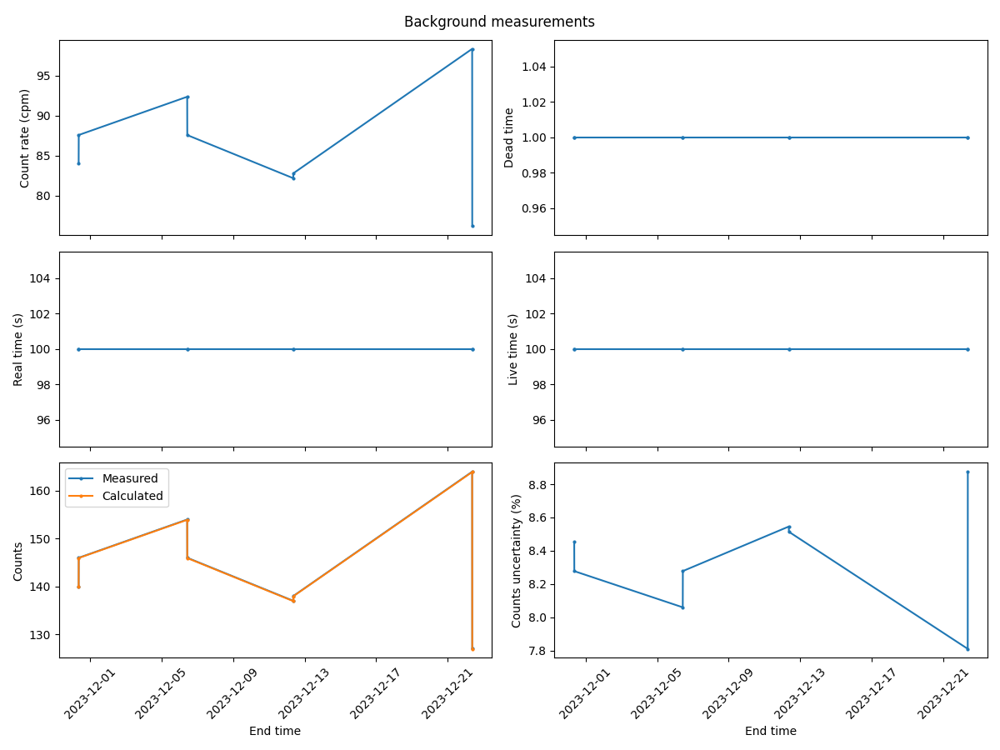
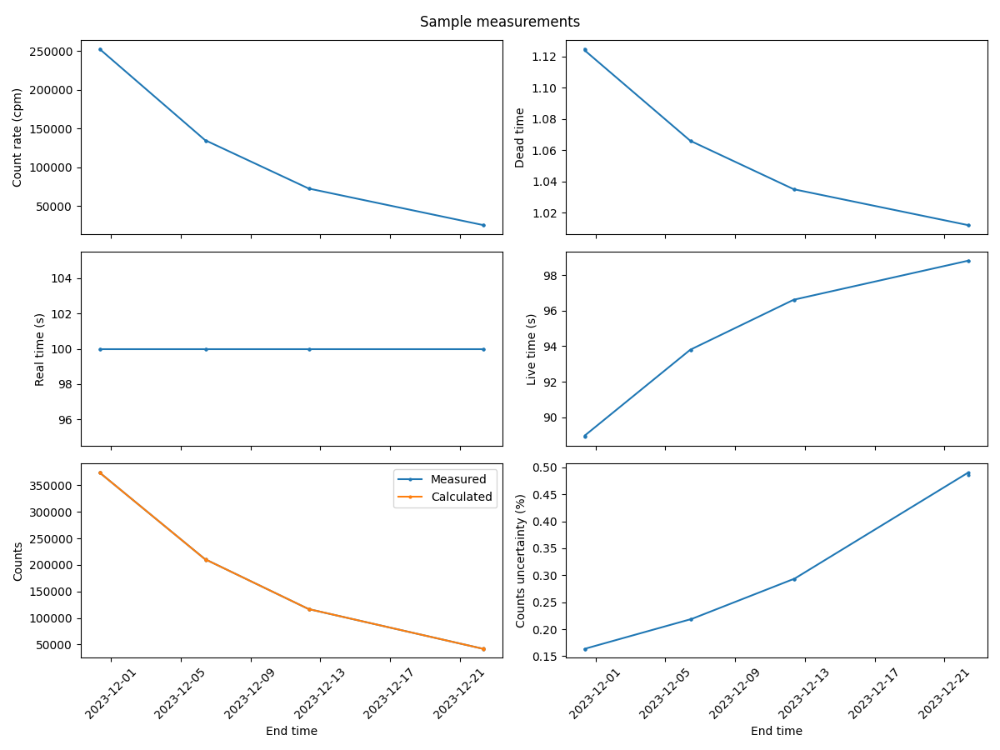
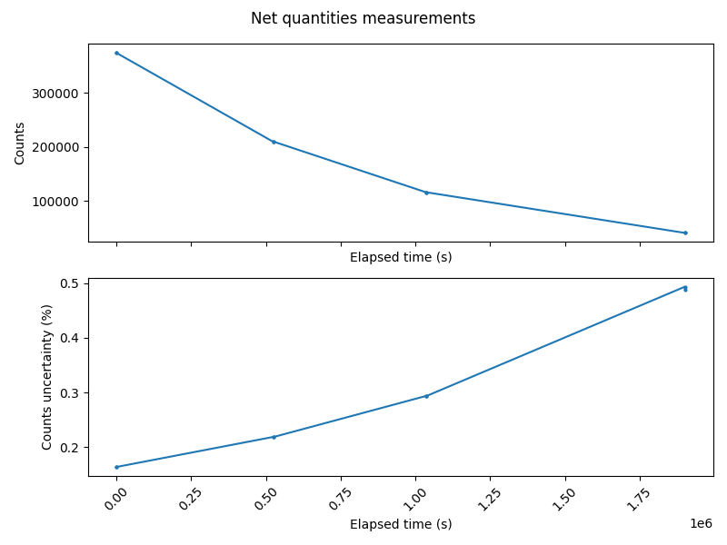

How to visualize and export measurements#
This guide will walk you through the steps to visualize and export the measurements of the Hidex 300 SL counter using the Hidex300 class. You will learn how to export measurement data to CSV files, generate plots for different types of measurements, and save these plots as PNG files.
Prerequisites:
Python installed on your system.
Required libraries:
metpyrad,matplotlib
How to export measurements as CSV#
Process the readings of the Hidex 300 SL using the Hidex300 class:
>>> from metpyrad import Hidex300
>>> processor = Hidex300(radionuclide='Lu-177', year=2023, month=11)
>>> processor.parse_readings(folder_path='/path/to/input/files/folder')
>>> processor.process_readings(kind='all')
To export different types of measurements to a CSV file and save it to a specific folder,
call the Hidex300.export_table method,
setting the kind parameter to the type of measurements to export
and providing the path to folder to save the file to.
The CSV file is named after the kind parameter.
Export the parsed readings:
>>> processor.export_table(kind='readings', folder_path='/path/to/output/folder')
Readings measurements CSV saved to "/path/to/output/folder" folder.
Export the background measurements:
>>> processor.export_table(kind='background', folder_path='/path/to/output/folder')
Background measurements CSV saved to "/path/to/output/folder" folder.
Export the sample measurements:
>>> processor.export_table(kind='sample', folder_path='/path/to/output/folder')
Sample measurements CSV saved to "/path/to/output/folder" folder.
Export the net measurements:
>>> processor.export_table(kind='net', folder_path='/path/to/output/folder')
Net measurements CSV saved to "/path/to/output/folder" folder.
Export all types of measurements:
>>> processor.export_table(kind='all', folder_path='/path/to/output/folder')
All measurements CSV saved to "/path/to/output/folder" folder.
How to plot measurements#
Process the readings of the Hidex 300 SL using the Hidex300 class:
>>> from metpyrad import Hidex300
>>> processor = Hidex300(radionuclide='Lu-177', year=2023, month=11)
>>> processor.parse_readings(folder_path='/path/to/input/files/folder')
>>> processor.process_readings(kind='all')
To plot different types of measurements,
call the Hidex300.plot_measurements method,
setting the kind parameter to the type of measurements to plot.
Plot the background measurements:
>>> processor.plot_measurements(kind='background')
>>> plt.show()
The returned plot will look like:
Plot the sample measurements:
>>> processor.plot_measurements(kind='sample')
>>> plt.show()
The returned plot will look like:
Plot the net measurements:
>>> processor.plot_measurements(kind='net')
>>> plt.show()
The returned plot will look like:
How to export plots#
Process the readings of the Hidex 300 SL using the Hidex300 class:
>>> from metpyrad import Hidex300
>>> processor = Hidex300(radionuclide='Lu-177', year=2023, month=11)
>>> processor.parse_readings(folder_path='/path/to/input/files/folder')
>>> processor.process_readings(kind='all')
To export a plot of different types of measurements to a PNG file and save it to a specific folder,
call the Hidex300.export_plot method,
setting the kind parameter to the type of measurements to export
and providing the path to folder to save the file to.
The PNG file is named after the kind parameter.
Export plots of the background measurements:
>>> processor.export_plot(kind='background', folder_path='/path/to/output/folder')
Background measurements PNG saved to "/path/to/output/folder" folder.
Export plots of the sample measurements:
>>> processor.export_plot(kind='sample', folder_path='/path/to/output/folder')
Sample measurements PNG saved to "/path/to/output/folder" folder.
Export plots of the net measurements:
>>> processor.export_plot(kind='net', folder_path='/path/to/output/folder')
Net measurements PNG saved to "/path/to/output/folder" folder.